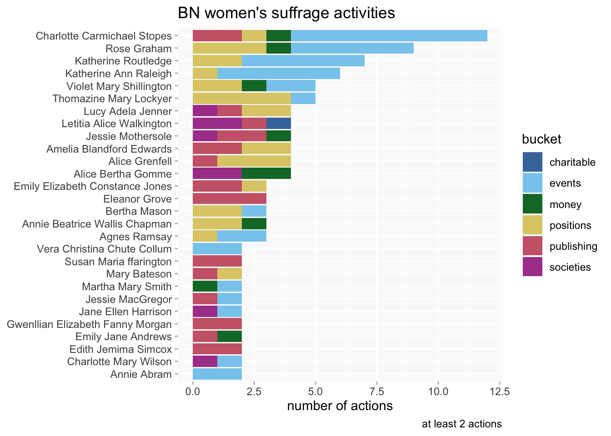

# shared libraries, functions etc ####
source(here::here("_R/shared.R"))
# standard query strings and queries ####
source(here::here("_R/std_queries.R"))Project workflow
methods
From Wikibase to visualisations
The project infrastructure
The Beyond Notability database has been created using Wikibase, a “software toolbox that offers a collaborative space to pool, edit and curate information in a structured way”. The biggest and best-known instance of Wikibase is Wikidata.
The BN wikibase lives on Wikibase Cloud, a free service hosted by Wikimedia Deutschland which is designed to make “it easy and quick to host your Wikibase with no need for your own infrastructure”. (At the time of writing, August 2024, it’s in Open Beta. There have been a few teething troubles over the last year, but it has good community support and is being used by a growing number of projects.)
Query Service and SPARQL
The wikibase Query Service (WQS) has been the essential tool for querying the project database.
This entailed learning SPARQL and something about the specifics of the Wikibase/Wikidata data model. (Many Wikidata resources are equally applicable to other Wikibases; the Wikidata Query Service (WDQS) works in much the same way as the WQS.)
Key resources I used, many of them free online:
General:
- Learning SPARQL book by Bob DuCharme (inexpensive)
Wikidata/wikibase-specific:
However, I quickly discovered that I wanted to do a lot of queries that were a bit different from most of the examples in basic Wikidata/wikibase SPARQL tutorials. These tend to cover how to do quite specific things like “find items that are films (P179) in the Star Wars series (Q22092344)”
But I was more likely to want to ask questions that would look like “find items that are associated with the Star Wars series, but I don’t know exactly what sort of things there might be yet, oh and can I have associated dates of any type for the results as well?”.
Writing queries to explore a wikibase where you don’t know exactly what you’re looking for, or you want to get several different kinds of a thing at the same time, turned out to be quite a bit harder (and involved getting more familiar with an intimidatingly complex data model). Stack Overflow was also invaluable.
From SPARQL to R
The crucial next step is to get the results of queries into R in order to use the Tidyverse and visualise with ggplot.
As far as possible I wanted the queries underpinning all my work to be recorded on the wikibase queries page. The queries page has two functions: it records the SPARQL queries for those who can read the language, but it also enables the queries to be run by those who can’t. So anyone can check the results against my outputs.
This influenced my workflow choices in specific ways which might not be quite the same for all projects.
R packages
Almost all the packages used regularly during the project are available from the official R CRAN repository. SPARQLchunks is only on Github.
for SPARQL queries
Ultimately, it isn’t essential to have a dedicated SPARQL package for sending queries to an endpoint; you could just use something like RCurl or httr. But it can be convenient to have functions set up for this particular purpose.
I played around a bit with this package which
aims at writing and sending SPARQL queries without advanced knowledge of the SPARQL language syntax. It makes the exploration and use of Linked Open Data (Wikidata in particular) easier for those who do not know SPARQL well.
It’s a nice package that I might well use in the future, but it wasn’t quite right for this project. I couldn’t really avoid getting to know SPARQL and I wanted to keep records of my queries in the wikibase. (My colleagues don’t know SPARQL well, it’s true… but they don’t know R either.) So it was simpler to copy and paste queries from the WQS.
This used to be the go-to package for querying SPARQL from R. But it was removed from the official R repository a few years ago and doesn’t seem to be maintained anywhere else so I decided not to use it. (But it probably still works if you get an archived copy from CRAN.)
I couldn’t quite get this package to work to do the thing it’s primarily advertised for (creating SPARQL code chunks)! But it worked perfectly for what I did want: fetching a SPARQL query and turning the results into a dataframe ready for further work.
other Wikibase/Wikidata packages
A Wikibase is installed as part of a Mediawiki site, and can also (very usefully) contain wiki pages that aren’t part of the wikibase, and this package is useful for getting stuff out of those pages.
This is a handy package to have around to query Wikidata directly. In practice I rarely used it; it’s easier to write a federated query from the WQS (though that’s likely to be slower, if speed is an issue).
other R packages
Large and small packages that have been used frequently in this project:
- tidyverse (“an opinionated collection of R packages designed for data science”; includes dplyr, tidyr, ggplot2, lubridate, stringr, among others)
- here (“uses the top-level directory of a project to easily build paths to files”)
- glue (“an implementation of interpreted string literals”, aka a smarter verson of paste/sprintf functions)
- reactable (interactive tables)
ggplot2 extensions for visualisations:
- ggthemes (a bunch of extra themes and functions for ggplot2)
- ggalt (more extras for ggplot2, including dumbbell charts)
- ggbeeswarm (a project favourite: beeswarm plots)
Setting up
A number of prerequisites and frequently used functions and objects are stored in two R scripts that are loaded at the beginning of every document.
what’s in the setup?
The two scripts contain a mix of package calls, functions, wikibase queries and R objects that are reused a lot. shared.R comes first and is more general purpose; std_queries.R is specifically for SPARQL query stuff.
So for example, the BN endpoint URL and prefixes are in std_queries.
bn_endpoint <- "https://beyond-notability.wikibase.cloud/query/sparql"
bn_prefixes <-
"PREFIX bnwd: <https://beyond-notability.wikibase.cloud/entity/>
PREFIX bnwds: <https://beyond-notability.wikibase.cloud/entity/statement/>
PREFIX bnwdv: <https://beyond-notability.wikibase.cloud/value/>
PREFIX bnwdt: <https://beyond-notability.wikibase.cloud/prop/direct/>
PREFIX bnp: <https://beyond-notability.wikibase.cloud/prop/>
PREFIX bnps: <https://beyond-notability.wikibase.cloud/prop/statement/>
PREFIX bnpq: <https://beyond-notability.wikibase.cloud/prop/qualifier/>
PREFIX bnpsv: <https://beyond-notability.wikibase.cloud/prop/statement/value/>
PREFIX bnpqv: <https://beyond-notability.wikibase.cloud/prop/qualifier/value/>
PREFIX bnwdref: <https://beyond-notability.wikibase.cloud/reference/>
PREFIX bnpr: <https://beyond-notability.wikibase.cloud/prop/reference/>
PREFIX bnprv: <https://beyond-notability.wikibase.cloud/prop/reference/value/>
"The bn_std_query() function puts together a query string to send to the WQS and fetch results in a dataframe:
bn_std_query <- function(sparql){
c(paste(
bn_prefixes,
sparql # a SPARQL query string *without prefixes*
)) |>
sparql2df(endpoint=bn_endpoint) # SPARQLchunks
}There are a few other functions for initial processing of results. Wikibase URIs are long URL strings like https://beyond-notability.wikibase.cloud/entity/Q537. So make_bn_item_id() and make_bn_ids() extract the plain IDs (Q537) with a bit of regex.
make_bn_item_id <- function(df, v) {
df |>
mutate(bn_id = str_extract({{v}}, "([^/]*$)")) |>
relocate(bn_id)
}
make_bn_ids <- function(data, across_cols=NULL, ...) {
data |>
mutate(across({{across_cols}}, ~str_extract(., "([^/]*$)")))
}Dates are returned as ISO 8601 timestamps and there’s a function in shared to convert them to a more R-friendly format. (The date column has to be named date. This was laziness on my part; it would have been more useful if I’d made it more flexible.)
# requires {lubridate}
make_date_year <-function(data){
data |>
# <unknown value> dates will fail to parse; convert to NA first
mutate(date = if_else(str_detect(date, "^_:t"), NA, date)) |>
mutate(date = parse_date_time(date, "ymdHMS")) |>
# might as well make a year column while we're here
mutate(year = year(date))
}Querying
a simple query: list women in the database
A list of all the women currently in the BN database with the number of statements for each woman, which gives an idea of how much information we’ve collected for her. A simple but typical example of the two-step sparql>query process.
bn_all_women_sparql <-
'SELECT distinct ?person ?personLabel ?statements
WHERE {
?person bnwdt:P3 bnwd:Q3 ;
wikibase:statements ?statements .
FILTER NOT EXISTS {?person bnwdt:P4 bnwd:Q12 .}
SERVICE wikibase:label {
bd:serviceParam wikibase:language "[AUTO_LANGUAGE],en,en-gb".
}
}
ORDER BY ?person'
bn_all_women_query <-
bn_std_query(bn_all_women_sparql) |>
make_bn_ids(person) Who do we have most information about?
bn_all_women_query |>
arrange(-statements) |>
filter(statements>=50) |>
kable() |>
kable_styling()| person | personLabel | statements |
|---|---|---|
| Q569 | Margaret Alice Murray | 165 |
| Q911 | Jane Ellen Harrison | 101 |
| Q23 | Eugénie Sellers Strong | 98 |
| Q57 | Rose Graham | 95 |
| Q133 | Margerie Venables Taylor | 80 |
| Q60 | Nina Frances Layard | 78 |
| Q709 | Kathleen Mary Kenyon | 75 |
| Q1053 | Charlotte Carmichael Stopes | 70 |
| Q894 | Alice Bertha Gomme | 66 |
| Q624 | Maria Millington Lathbury Evans | 65 |
| Q153 | Eliza Jeffries Davis | 61 |
| Q145 | Tessa Verney Wheeler | 60 |
| Q807 | Elsie Margaret Clifford | 59 |
| Q3628 | Katherine Routledge | 58 |
| Q275 | Joan Evans | 57 |
| Q1065 | Helen Mary Tirard | 55 |
| Q880 | Emma Louisa Radford | 52 |
| Q916 | Agnes Conway Horsfield | 51 |
| Q863 | Dorothy Annie Elizabeth Garrod | 50 |
a more complex query: suffrage activities
See this blog post on suffrage-related activities.
While analyses often revolve around distinct database properties (or categories) in the wikibase, such as spoke at or held position, women’s suffrage-related activities are recorded using a triple instance of (P12) suffrage activity (Q1166) attached to a property; occasionally an organisation is directly recorded as an instance of suffrage activity (eg).
Many properties, especially for public and professional activities (PPAs) potentially could have this information attached. For example, Alice Bertha Gomme was a member of (P67) the Women’s Emancipation Union (Q2711) and the Parliamentary Committee for Women’s Suffrage (Q3808); she also gave money to (P115) the Women’s Social and Political Union (Q746).
So this is a case where I can’t assume a fixed set of properties for a query; I need queries that will look for the P12-Q1166 combination anywhere (including a few cases where it’s not explicitly recorded on a woman’s page but an organisation she’s involved with has that instance of). I also want to get associated information (including dates) in qualifiers and not all of the properties have exactly the same qualifiers, so some flexibility is desirable there as well.
bn_suffrage_sparql <-
'SELECT distinct ?person ?personLabel ?mainLabel ?subvalLabel ?ofLabel ?date ?s
WHERE {
?person bnwdt:P3 bnwd:Q3 . #select women
FILTER NOT EXISTS {?person bnwdt:P4 bnwd:Q12 .} #filter out project team
?person ?p ?s .
?s ?sub ?subval .
?main wikibase:claim ?p.
?main wikibase:statementProperty ?sub.
# sub_ i/o some have suffrage activity which will duplicate, filter
optional { ?subval bnwdt:P12 ?sub_io .
filter not exists { ?subval bnwdt:P12 bnwd:Q1166 . }
}
# union query
{ # qualifier on the page i/o suffrage activity
?s bnpq:P12 bnwd:Q1166.
}
union
{ # org in qualifier has i/o suffrage activity.
?s ?pq ?qual .
?qual bnwdt:P12 bnwd:Q1166 .
} # /union
optional { ?s bnpq:P78 ?of. }
optional {
# dates.
?s ?dpq ?qual_date .
?qual_date wikibase:timeValue ?date .
}
SERVICE wikibase:label {
bd:serviceParam wikibase:language "[AUTO_LANGUAGE],en,en-gb".
}
}
order by ?personLabel ?mainLabel'
bn_suffrage_query <-
bn_std_query(bn_suffrage_sparql) |>
make_bn_item_id(person) |>
make_bn_ids(c(s)) |>
mutate(across(c(date, mainLabel, subvalLabel, ofLabel),
~na_if(., ""))) |>
relocate(person, .after = last_col())
# use the ppa_buckets data to add broad categories to activities
bn_suffrage_buckets <-
bn_suffrage_query |>
left_join(bn_ppa_buckets |>
select(ppa, bucket=label), by=c("mainLabel"="ppa")) |>
mutate(bucket = case_when(
bucket=="event participation" ~ "events",
is.na(bucket) & mainLabel=="gave money to" ~ "money", # not in ppa_buckets for some reason
.default = bucket
)) |>
# there's also a `recorded in` which is not relevant.
filter(!is.na(bucket))A look at the BN women who were most involved in suffrage activities:
bn_suffrage_buckets |>
add_count(bn_id, name="n_bn") |>
filter(n_bn>1) |>
count(bn_id, personLabel, bucket, n_bn, sort = T) |>
mutate(personLabel =fct_reorder(personLabel, n_bn)) |>
ggplot(aes(n, personLabel, fill=bucket)) +
geom_col() +
scale_fill_ptol() +
labs(y=NULL, x="number of actions",
title = "BN women's suffrage activities",
caption = "at least 2 actions")
The workflow in practice
See the posts on this blog for examples of data analysis and visualisations using the workflow; the linked Github repository contains the R code for those who’d like to dig further.